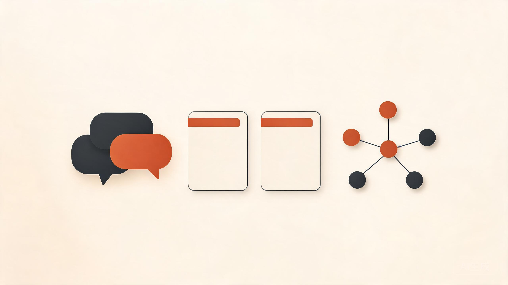
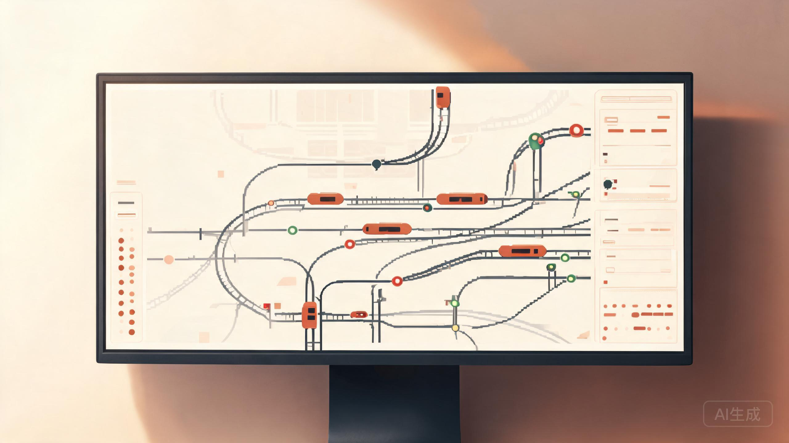

2024.07 ~ 2024.08
个人项目
RAG 智能工单系统
面向运维故障报修场景的大模型应用原型，支持自然语言问答、知识库检索与自动工单生成，部署于腾讯云服务器。
About
我是张文龙，一名来自山东济南的软件工程专业本科生。
在校期间系统学习了 Java、SpringBoot、MyBatis-Plus、MySQL、Redis 等后端技术，也熟悉 Vue3 + TypeScript 前端开发。课外接触了 UDP/Socket 网络报文处理、RAG 大模型应用开发，以及 Docker 容器编排与 Linux 基础运维。
参与过企业实习与实验室横向课题，能够独立完成业务模块编码、接口实现、数据库设计、前后端联调自测与系统部署。同时有两年团委办公室干事经历，具备跨部门沟通与文档整理能力，做事踏实严谨，愿意服从团队岗位安排。
Selected Work
企业实习、个人项目与实验室课题中的实践成果。

面向运维故障报修场景的大模型应用原型，支持自然语言问答、知识库检索与自动工单生成，部署于腾讯云服务器。

CTCS-3 级列控系统联合仿真平台，参与 RBC 无线闭塞中心节点开发，实现消息按位编解码、闭塞区间定位与行车许可计算。
基于 Spring Boot 的多角色权限排班小程序，引入 Redis 缓存与遗传算法优化排班约束，提升排班效率约 40%。
Contact
欢迎交流技术问题、实习机会或项目合作。我会尽快回复邮件。